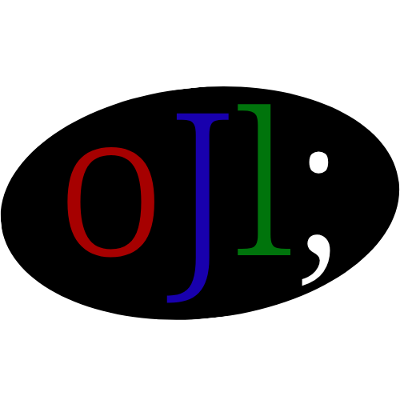

OpenJl é uma linguagem de script simples e direta, focada na facilidade de aprendizado e uso.
say "Hello";
Conheça mais sobre o oJl!
Leia a documentação.
Baixe o interpretador oJl
Baixe o oJl Reader